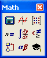

The Mathcad Workspace |
When you start Mathcad, you see a blank worksheet where you can enter text, math equations, graphs, and images. To learn how to work in the worksheet, open the tutorials in the Resources window. To do so, click on Tutorials under the Help menu. You see:
Working directly in Mathcad helps you learn basic skills. Each topic should take 5 to 10 minutes to complete.
These tutorials explain some of the more complex features in greater depth than the Getting Started Primers.
The Resources Window also contains Mathcad QuickSheets, live samples of different functions. You are now using the Resources Window to view Help. The Getting Started User's Guide and Release Notes can also be viewed from the Resources Window.
Mathcad toolbars provide access to a number of features, functions, and math operators. You can follow the links below to see what each contains, or try them yourself directly in the worksheet window.
The Menu bar.
The Math toolbar.
The Standard toolbar.
The Formatting toolbar.
You can choose to show or hide other toolbars from the View menu.
| Math toolbar |

Each button in the Math toolbar opens another toolbar of operators or symbols.
When you exit and re-open Mathcad, the elements are positioned as they were when you exited.